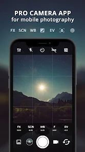
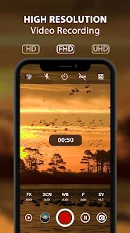
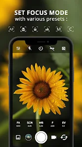
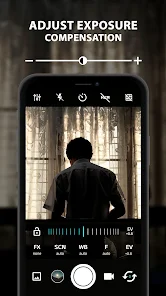
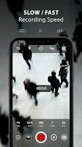
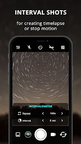

ProCam X - Lite :
ProCam X will turn your phone into professional camera wanna be, with full control over exposure, focus, white balance, ISO and another features like a professional camera, which can bring your mobile photography to the next level. Take the best capture of your photo and even record your video in high resolution.User Voices
Ok for a free app, better than many. Of course, the higher settings are off limits unless you pay. But what is available in the Lite (free) version is more than sufficient for casual photography. I li.

App Art






ProCam X will turn your phone into professional camera wanna be, with full control over exposure, focus, white balance, ISO and another features like a professional camera, which can bring your mobile photography to the next level. Take the best capture of your photo and even record your video in high resolution.
☆ ProCam X - HD Camera Pro : best camera features : ☆
✓ Control exposure (lock / adjust value)
✓ Control white balance
✓ Manual ISO *
✓ Manual focus *
✓ Manual shutter speed *
✓ Intervalometer
✓ Burst shooting mode
✓ Set custom video bit rate
✓ Realtime filter / color effect
✓ Geotagging
✓ Anti Shake
* On supported devices with camera2api enable
It's excellent fast camera features perform quickly giving your.
☆ ProCam X - HD Camera Pro : best camera features : ☆
✓ Control exposure (lock / adjust value)
✓ Control white balance
✓ Manual ISO *
✓ Manual focus *
✓ Manual shutter speed *
✓ Intervalometer
✓ Burst shooting mode
✓ Set custom video bit rate
✓ Realtime filter / color effect
✓ Geotagging
✓ Anti Shake
* On supported devices with camera2api enable
It's excellent fast camera features perform quickly giving your.
3.9★Rating
40.5KReviews